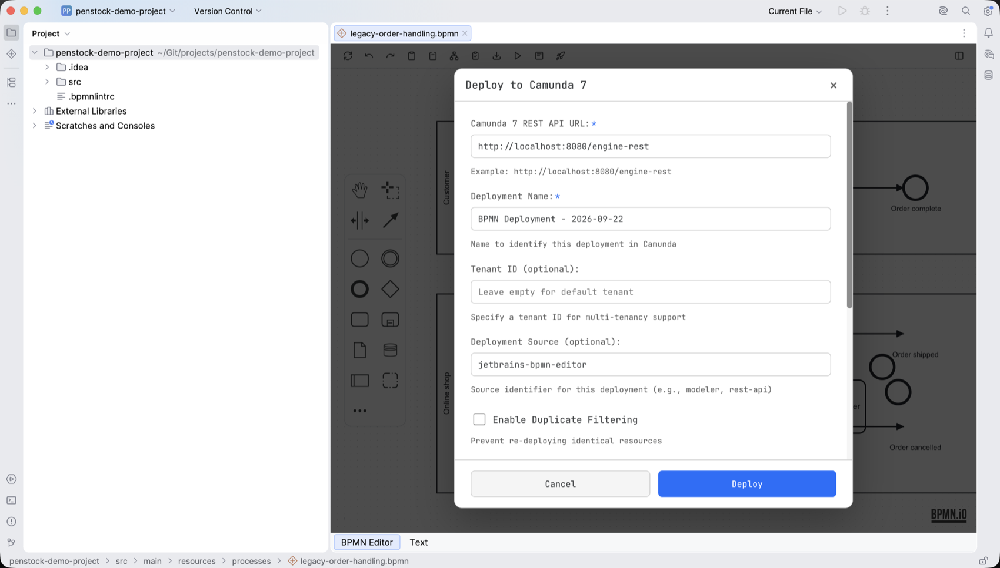

Deployment
Penstock can send the diagram you are editing to a running Camunda 7 or Camunda 8 engine. The request to the engine is made by the IDE process, not by the embedded browser, so no CORS configuration is needed on the engine. Credentials are typed into the dialog and handed to the IDE with the request. A credential that is kept for next time goes to the IDE password safe, never to a project file.
Opening the dialog

The Deploy button appears in the editor toolbar when the project's engine profile is Camunda 7 or Camunda 8. Under the Classic BPMN 2.0 profile there is no deployment target, so the button is not shown. See Engine profiles for how the profile is chosen.
Pressing Deploy exports the current state of the canvas and opens a dialog titled Deploy to Camunda 7 or Deploy to Camunda 8, depending on the profile. What is sent is the diagram as it stands in the editor, including edits you have not saved to disk yet.
What is sent
The diagram goes to the engine as one multipart/form-data POST. It carries a
single file part, filename process.bpmn, content type
application/xml. The form field name of that part is process.bpmn
on Camunda 7 and upload on Camunda 8. Camunda 7 sends the dialog's other settings
as plain form fields beside it. Nothing else from the project is included — no other diagrams,
no element templates, no settings file. OAuth2 is the one case that makes a second request:
the token request that precedes the deployment.
Camunda 7
The URL you give is the base of the engine's REST API; Penstock appends
/deployment/create to it. The dialog's fields map one to one onto the form fields
of that endpoint.
| Camunda 7 REST API URL | Defaults to http://localhost:8080/engine-rest |
| Deployment Name | Required. Defaults to BPMN Deployment - followed by today's date |
| Tenant ID | Optional. Empty means the default tenant |
| Deployment Source | Optional. Defaults to jetbrains-bpmn-editor |
| Enable Duplicate Filtering | Off by default |
| Deploy Changed Only | Off by default. Overrides duplicate filtering |
| Activation Time | Optional ISO 8601 timestamp. Empty means activate immediately |
Authentication for Camunda 7 is HTTP basic only. Tick Use Authentication and
give a username and password; both are then required before the dialog will submit. The
credentials are sent as an Authorization: Basic header.
Camunda 8
Camunda 8 deployment goes to the Orchestration Cluster REST API. Give the v2 API base URL; if
it does not already end in /deployments, that path is appended. The field
defaults to http://localhost:8080/v2. For SaaS the dialog shows the shape of the
cluster endpoint:
https://[region].zeebe.camunda.io/[cluster]/v2There are no deployment name, tenant or filtering options here — Camunda 8 takes none. The dialog notes that a Camunda 8 deployment is atomic and that the maximum request size is 4 MB.
Authentication methods
| None | No authorization header. Intended for local development |
| Basic Authentication | Username and password, sent as Authorization: Basic |
| Bearer Token | A token you have already obtained, sent as Authorization: Bearer |
| OAuth2 / OIDC | Client credentials grant. Client ID, client secret, token URL, and an optional audience |
| API Key | A key for Camunda SaaS, sent as Authorization: Bearer |
With OAuth2 selected, Penstock first POSTs grant_type=client_credentials to the
token URL as a form-encoded body, reads access_token out of the JSON response,
and uses it as a bearer token on the deployment request. If the token endpoint cannot be
reached, answers with a non-2xx status, or returns a body without an access token, the
deployment stops there and the error says which of the three happened. The audience field is
sent only when you fill it in. The token request has its own 15-second timeout.
Saved settings and credentials
What you enter is remembered for the next deployment, in two different places depending on whether it is a secret. Pressing Deploy writes the non-secret fields to the project configuration whether or not Save Preferences is ticked; the checkbox governs the secrets only.
Project configuration
URLs, deployment name, tenant, source, the filtering checkboxes, activation time,
authentication type, username, client ID, token URL and audience. These go to the
project's bpmn-project.xml.
IDE password safe
Password, bearer token, client secret and API key. These go to the IDE's own credential store, scoped to the project, and are never written to a project file.
Unticking Save Preferences and deploying again erases the stored secrets from the password safe. Secrets are read back into the dialog only while Save Preferences is on.
Feedback
A notification appears in the editor while the request is in flight, and again when it finishes. A successful Camunda 7 deployment reports the deployment ID, and the name of the deployed process definition when the engine's reply lists one; a successful Camunda 8 deployment reports the deployment key.
If the engine rejects the deployment, the notification carries the HTTP status code and the
engine's response body verbatim, which is where the useful detail usually is. A Camunda 8
reply of 503 mentioning RESOURCE_EXHAUSTED is reported as backpressure, with the
advice to retry with exponential backoff.
While a deployment is running, the dialog's Cancel button aborts it. The request also times out on its own after 30 seconds.
Security
Deployment is the only thing that sends anything off the machine. The plugin makes no outbound calls of its own — no telemetry, no update polling, no background fetches. The licence is checked against the data the IDE already holds, and the element template catalogue the editor shows is read from files bundled with the plugin. A diagram leaves the machine only when you press Deploy, and only to the URL configured in the dialog.
Because credentials are held by the IDE password safe rather than the project file, a
bpmn-project.xml committed to version control carries the endpoint and the
username but no secret.